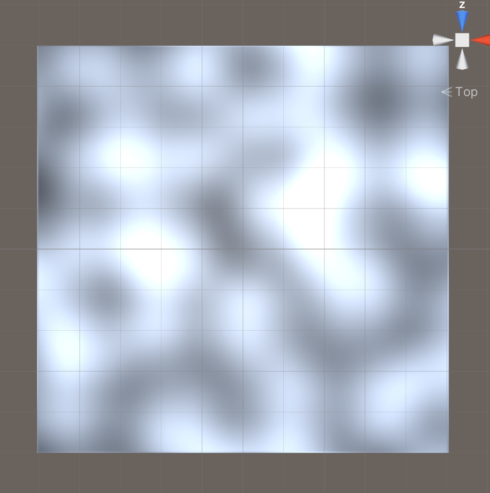

Unity Perlin Noise Generator
Project Type
Personal Project
Date Complete
23/03/2024
Project overview
This perlin noise generator was a personal project made in unity that is a precursor to a larger project which involves using perlin noise to generate random terrain in unity for a game.
The perlin noise is generated using mathf perlin noise function which is mapped to pixels on a texture which is then applied to the in game plane and updated in real time when the scale and size is changed.